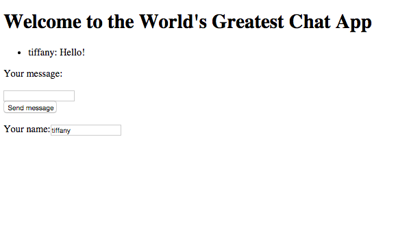

In this section we will go over how to test your Server and Client code to make sure your chat app is is working properly.
Make sure you have your server.js, client.js, index.html, node_modules folder, and package.json in the same folder.

You need to run two servers for you chat app. The WebSocket server you wrote in this tutorial and an http server to host your html file and it's contents.
In one window navigate navigate to the folder that contains all of your files. once you are in that file, type node server.js in the terminal and press enter.

In the second terminal window type in http-server and press enter. This runs an http server so you html file will be hosted.

Go to your web browser. To see your site type in localhost:8080 (http servers defalut to port 8080, when logging onto your http server if you were to type http-server -p1000 your server would be running on port 1000 instead of 8080) Your basic html file should render. If you open multiple browser windows ang go to localhost:8080 you can chat between browsers.
Congradulations! Your server is working locally! Make sure you exit both of terminal servers by hitting control C. Now you can CSS style and add features to your chat app. Add a function that renders photos? Emojis?